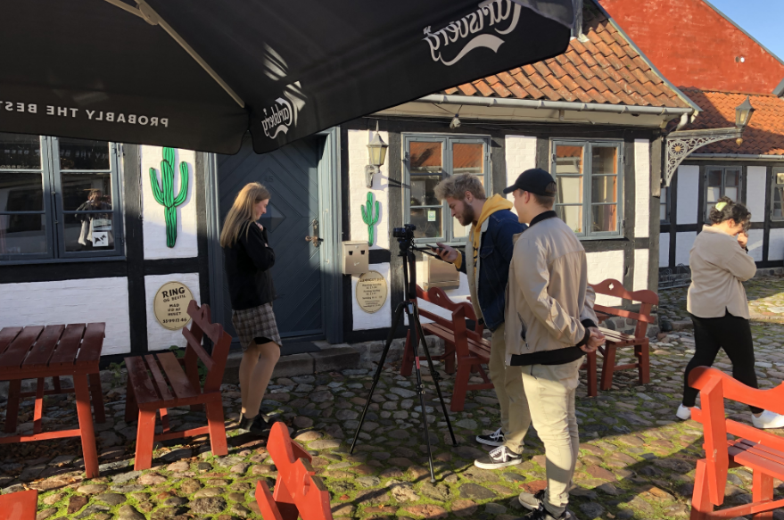
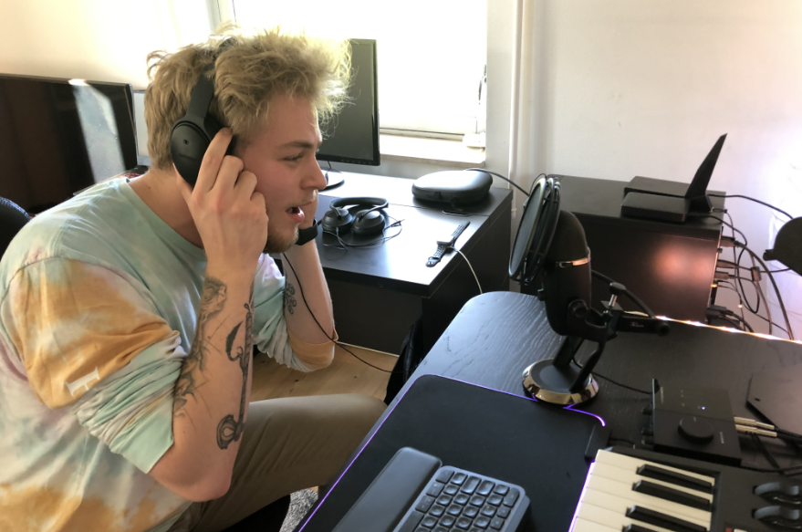

So who am I? I'm a danish student who've lived in Denmark all of my life. For as long as I can remember, I've been a very visual and creative person. Not to toot my own horn, but that's how it's always been. I took a Design and Communication&IT in collage, and that was sort of the stepping stone to the education I'm pursuing now. At the moment I'm studying Multimediadesign at Zealand in Denmark.
So as I mentioned above, I am from Denmark and have always lived here, and still do! I come from a rather small town called Vordingborg. This is where I was born and raised. In a long time, I've wanted to move to a bigger city. And that still is my plan, but for now I live where make sense for my education. Even though I live about 45 minuts, in car, from my education. I still plan that one day I will end up in a city like Copenhagen.
I am what you would call an almost all around designer... That means, that I do graphic design, web design, video making and a lot more. My burning passion is to make movies one day, even if it is just as an editor! But that doesn't mean I don't love to do graphic design and web design!